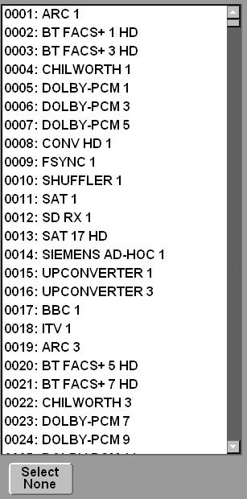

Router List Component
This is a simple control to show a list of router names.
This was designed for use on simple XY panels or mapping
applications.
The first column is always an index value calculated from
route name with optional offset applied.

It is database change aware so that the list is updated when
a name changes on the network.
Commands
| Name |
Use |
| instance |
Instance of the device to take router names
from |
| database |
the router database number |
| panel |
the ".bncs_ui" file to use. The extension is
added by the component and should not be
supplied as a parameter |
| range |
This has two forms: "all" uses the database
size to work out the maximum number of names to
load.
The second form is <min>-<max> for example to
load names 10 to 20 you'd use "10-20" |
| selected |
Values are "next", "previous" or "none" |
| offset |
Value to add to the displayed index and
index returned by the notification.
e.g.
with range of 2501-2548 and offset of -2500 the displayed index starts at
1. The notifications also start at 1 |
Notifications
| Name |
Use |
| index=<router index> |
The selected router index or 0 if nothing is
selected |
Stylesheets
| Name |
Use |
| groupbox |
background to the control |
|